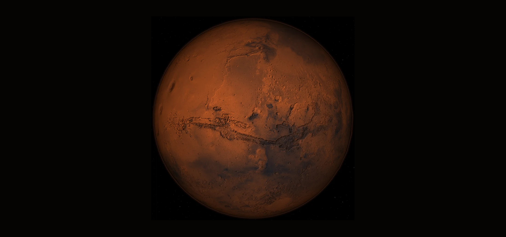

Human Base Site Suitability on Mars — GIS Multi-Criteria Analysis
Where would you build the first human base? A GIS multi-criteria suitability analysis (MCDA) built entirely on open NASA/USGS data.
1.Project Overview
L'obiettivo del progetto è individuare le aree più idonee a ospitare una futura base umana su Marte attraverso un'analisi multicriteriale (MCDA) sviluppata interamente in QGIS. Invece di concentrarsi sugli aspetti biologici (come la ricerca di vita microbica), lo studio adotta una prospettiva puramente ingegneristica, focalizzandosi sull'idoneità a costruire un'ipotetica base marziana.
A questo scopo sono stati selezionati e mappati cinque criteri chiave: la morfologia del terreno (pendenza ed elevazione), le risorse strategiche (accessibilità all'acqua ghiacciata nel sottosuolo), la geologia (tipologia del materiale superficiale) e i fattori ambientali (insolazione e temperature medie). Tutti i dataset sono stati riclassificati su una scala comune di idoneità (0–5) e integrati tramite la tecnica del weighted overlay. Dal modello finale sono stati estratti i siti candidati e derivati una zonizzazione funzionale del territorio e un indice di priorità strategica a supporto delle decisioni di localizzazione.
2.Strategic Value & Output
La scelta del sito d'insediamento è una delle decisioni più critiche e vincolanti dell'intera esplorazione marziana. Da questa scelta geografica dipende direttamente la sostenibilità del bilancio energetico della base — il delicato equilibrio tra la capacità di generare potenza (legata all'insolazione per l'efficacia del fotovoltaico) e la necessità di consumarla (riscaldamento degli habitat in un ambiente freddo ed estrazione del ghiaccio). Oltre ai fattori energetici, la localizzazione vincola la sicurezza strutturale e l'accesso a risorse vitali come l'acqua, fondamentale per la produzione in situ di ossigeno e propellente tramite tecnologie ISRU (In-Situ Resource Utilization).
Lo studio dimostra come dati planetari aperti e strumenti GIS open-source possano produrre, in modo trasparente e riproducibile, una mappa decisionale di idoneità, una rosa di siti candidati ordinati e una lettura pianificatoria del territorio (vocazioni acqua/energia e priorità strategica). L'output principale è la mappa di idoneità composita 0–5 con i relativi siti candidati.

3.Study Area
L'area di studio interessa l'intero pianeta Marte, circoscritta alla fascia latitudinale compresa tra ±60°. Questa delimitazione risponde a una duplice necessità: da un lato coincide con l'estensione dei dati sul ghiaccio sotterraneo (progetto SWIM), dall'altro riflette precisi vincoli logistici — le zone polari sono troppo fredde e a lungo al buio, mentre le regioni equatoriali presentano forte scarsità di ghiaccio accessibile. Sotto il profilo tecnico, l'intero flusso di lavoro adotta il sistema di riferimento Mars 2000 (Sphere) (ESRI:104971, raggio 3.396.190 m), nativo dei modelli MOLA/HRSC: ogni layer è stato riproiettato in questo CRS per garantire coerenza geometrica durante le sovrapposizioni.
Per l'esplorazione visiva dei dati è stato implementato un globo 3D interattivo di Marte: si ruota e si zooma liberamente, e dal pannello Layers si attivano e disattivano i singoli livelli dell'analisi — le mappe intermedie (§6), i criteri riclassificati (§7), la mappa di idoneità con i siti candidati (§8–9) e le vocazioni funzionali (§10) — proiettati direttamente sulla sfera. La base è il mosaico Viking a colori naturali; i livelli SWIM e di idoneità coprono la fascia di analisi ±60°.
I principali elementi geografici di Marte
Alcuni riferimenti fisiografici e geologici utili come contesto per leggere i risultati del modello di idoneità:
- Dicotomia crostale: la fondamentale asimmetria geomorfologica di Marte, tra le pianure vulcaniche basse e giovani del nord (Vastitas Borealis, Acidalia, Utopia, Arcadia) e le antiche terre alte, densamente craterizzate, del sud (Noachis, Terra Cimmeria, Arabia Terra).
- Olympus Mons & Tharsis: il colossale rigonfiamento vulcanico che ospita i tre Tharsis Montes (Ascraeus, Pavonis, Arsia) e l'Olympus Mons (~22 km), il vulcano a scudo più alto dell'intero Sistema Solare.
- Valles Marineris: un immenso sistema di canyon esteso per oltre 4.000 km, con profondità fino a 7 km; è la più grande frattura tettonica del pianeta, originata dal sollevamento della vicina regione di Tharsis.
- Hellas Planitia: il più grande bacino da impatto visibile su Marte (~2.300 km di diametro). Essendo il punto più depresso della superficie, registra la pressione atmosferica più elevata e temperature meno rigide: per questo la sua area circostante emerge spontaneamente tra i siti candidati del modello.
- Arcadia Planitia: pianura settentrionale liscia con vaste riserve di ghiaccio sotterraneo a medie latitudini. È uno dei principali siti ottimali individuati dall'analisi, in accordo con le aree di atterraggio al vaglio della NASA per le future missioni umane.
- Calotte polari (Planum Boreum e Australe): estesi plateau stratificati di ghiaccio d'acqua (e CO₂ al polo sud). Pur essendo i principali serbatoi idrici, il modello li esclude per i vincoli termici e di illuminazione troppo estremi.
- Siti di esplorazione robotica: i crateri Jezero (Perseverance), Gale (Curiosity) e Gusev (Spirit), integrati nella mappa come benchmark geografici e riferimenti noti per orientare la navigazione.
4.Data Source
| Dataset | Use | Resolution | Source |
|---|---|---|---|
| MOLA / HRSC Blended DEM Global v2 | Elevation → slope, hillshade | 200 m | USGS Astrogeology / PDS |
| SWIM 2.0 — Combined Ice Consistency | Water-ice access | 3 km | Planetary Science Institute / NASA (Morgan et al. 2021) |
| TES Thermal Inertia (Nightside 2003) | Surface material / soil | 3 km (20 ppd) | MGS-TES, Putzig & Mellon (PSI, 2005) |
| Mars Climate Database v6.1 | Mean surface temperature | GCM (~5°) | LMD / ESA |
| Insolation (latitude proxy) | Solar potential (energy) | derived | Computed from DEM |
| Viking Colorized Mosaic (MDIM 2.1) | Basemap | 232 m | USGS / NASA |
5.Methodology

La metodologia si fonda sull'Analisi Multicriterio (MCDA), un approccio decisionale strutturato che integra fattori eterogenei — morfologici, geologici, energetici e di risorsa — in un unico modello quantitativo, trasparente e riproducibile. L'intero flusso, sviluppato in QGIS, si articola in cinque fasi sequenziali.
Selezione e derivazione dei criteri
Dalle fonti open-source NASA/USGS sono stati individuati i cinque fattori che governano l'idoneità ingegneristica: pendenza, accesso all'acqua ghiacciata, tipologia di materiale superficiale (inerzia termica), insolazione e temperatura. Ogni criterio è stato ricavato dai dati originari tramite elaborazioni dedicate — calcolo della pendenza dal DEM, fusione dei tre livelli di ghiaccio SWIM, conversione dei dati binari TES, estrazione delle temperature dal modello climatico globale.
Riclassificazione su scala comune (0–5)
Criteri espressi in unità fisiche diverse (gradi, kelvin, indici di consistenza) non sono direttamente confrontabili né sommabili. Ciascun layer è stato quindi normalizzato su una scala ordinale di idoneità da 0 a 5 (0 = area inadatta o vincolo escludente, 5 = condizione ottimale).
Armonizzazione su griglia comune
I cinque criteri provengono da fonti con CRS, risoluzioni ed estensioni differenti. Prima dell'overlay ogni layer è stato riproiettato e ricampionato — con metodo average, che preserva l'informazione mediando i pixel sorgente — su una griglia comune: CRS Mars 2000 Sphere, estensione −180°/+180° × −60°/+60° (la fascia imposta dalla copertura del ghiaccio) e risoluzione di 0,05° (≈ 3 km).
Weighted Overlay (somma pesata)
Il cuore dell'MCDA è la creazione di un indice composito di idoneità, ottenuto combinando i criteri riclassificati attraverso una somma pesata in cui ogni fattore contribuisce in proporzione alla sua importanza strategica. Perché l'indice resti coerente con la scala 0–5, la somma dei pesi è pari a 1: idoneità = Σ pesoᵢ × criterioᵢ.
Estrazione dei siti e letture interpretative
Dalla mappa finale si isolano e vettorializzano le aree a punteggio più elevato, ottenendo i siti candidati. Due passaggi interpretativi finali traducono l'indice nel linguaggio della pianificazione: una carta delle vocazioni (bilancio tra risorsa idrica e potenziale energetico) e un indice di priorità strategica (idoneità ponderata per la rarità geografica del territorio).
Perché queste scelte? — scala 0–5, ricampionamento average, pesi asimmetrici
Scala a soli cinque livelli — è una scelta metodologicamente consapevole: riflette in modo onesto il reale grado di incertezza dei dati planetari (in particolare ghiaccio e insolazione), evita di attribuire al modello una falsa precisione e garantisce coerenza tra i criteri. Adottare scale di ampiezza diversa altererebbe infatti in modo implicito i pesi nella fase di sovrapposizione.
Ricampionamento average — quando si porta un raster su una griglia più grossolana, ogni nuova cella finisce per coprire più pixel della mappa originale. Il metodo average assegna alla cella la media di tutti i pixel che ricadono al suo interno: così il valore finale riassume l'intera area, senza buttare via informazione. L'alternativa più semplice, il nearest neighbour, si limita invece a copiare il valore di un solo pixel (il più vicino al centro) ignorando tutti gli altri: va benissimo per i dati categorici, dove una media non avrebbe senso, ma su grandezze continue come pendenza, temperatura o consistenza del ghiaccio rischia di restituire un valore poco rappresentativo e più "a scacchiera". Per questo, aggregando verso il basso dati continui, la media è la scelta corretta.
Pesi asimmetrici — l'assegnazione segue un principio chiaro: le risorse locali insostituibili (acqua ed energia) pesano di più; i fattori "ingegnerizzabili" (terreno, temperatura) pesano meno, perché le loro criticità possono essere superate con soluzioni tecniche. È questo giudizio, esplicitato nella tabella dei pesi, a rendere il modello leggibile e discutibile.
6.Intermediate Maps
Prima del Weighted Overlay, i dataset di partenza sono stati elaborati, standardizzati e omogeneizzati per generare i layer cartografici intermedi — i pilastri informativi del modello, pronti per essere riclassificati sulla scala comune di idoneità.

6.1 DEM & Geomorphology
Basato sul dataset globale MOLA/HRSC (200 m), questo livello e il relativo hillshade definiscono topografia e orografia di base. La carta suddivide la superficie in cinque macro-unità geomorfologiche — pianure settentrionali (Vastitas Borealis), terre alte meridionali, bacini profondi (Hellas), province vulcaniche (Tharsis, Elysium) e plateau di transizione — evidenziando la netta dicotomia crostale nord/sud.

6.2 Slope / Accessibility
Layer derivato dal DEM globale applicando il corretto fattore di scala (metri per grado) specifico per il raggio planetario di Marte. Parametro cruciale in ambito ingegneristico per escludere aree scoscese o pericolose e identificare i terreni pianeggianti adatti alle manovre di atterraggio e alla costruzione delle infrastrutture.

6.3 Subsurface Ice — SWIM 2.0
Per mappare presenza e raggiungibilità della risorsa idrica sono stati integrati i dati SWIM (Subsurface Water Ice Mapping), analizzati su tre livelli di profondità (0–1 m, 1–5 m, oltre 5 m) per restituire un quadro tridimensionale della consistenza e stabilità del ghiaccio sotterraneo. Passa il mouse sulle altre due schede per i livelli più profondi.

Ice consistency — 1–5 m
Fascia intermedia di profondità: il ghiaccio resta accessibile con scavi più impegnativi. Nel modello di idoneità entra con un peso ridotto (moltiplicatore 0,6) rispetto allo strato superficiale.

Ice consistency — oltre 5 m
Strato più profondo: risorsa presente ma logisticamente onerosa. Contribuisce all'indice combinato con il peso minore (moltiplicatore 0,3), pesando meno degli strati raggiungibili in superficie.

6.4 Thermal Inertia (surface material)
Elaborato dai dati dello strumento TES (Thermal Emission Spectrometer), analizza l'inerzia termica notturna per classificare consistenza e consolidazione dei materiali superficiali — dalla polvere fine e sabbia fino al bedrock roccioso esposto. È l'equivalente planetario di una carta di copertura del suolo, indispensabile per valutare la stabilità geotecnica dei terreni e la facilità di scavo.

6.5 Temperature — proxy
Prima stima (proxy) della temperatura basata esclusivamente su latitudine ed elevazione. Un'approssimazione rapida, poi sostituita dal dato modellato per garantire rigore scientifico — passa alla scheda successiva.

Temperature — Mars Climate Database
Il layer proxy è stato sostituito con i dati di temperatura media annua modellati dal Mars Climate Database (MCD) tramite modelli di circolazione globale (GCM), ottenendo una mappatura climatica decisamente più accurata e coerente con la fisica atmosferica del pianeta.
7.Suitability Criteria — Reclassification (0–5)
Per consentire l'integrazione dei diversi livelli nel Weighted Overlay, ogni criterio è stato standardizzato e riclassificato sulla scala comune di idoneità 0–5 (0 = area inadatta o vincolo escludente, 5 = condizione ottimale).

Slope (pendenza)
Penalizza i terreni scoscesi per garantire stabilità strutturale e sicurezza di atterraggio. Pendenze 0°–2° (aree pianeggianti ottimali) ricevono il punteggio massimo (5); i versanti oltre 25° ottengono 0, perché instabili o inaccessibili ai mezzi di superficie.

Ice — SWIM (risorsa idrica)
Ottenuto fondendo i tre layer di profondità con peso decrescente (1,0 per 0–1 m; 0,6 per 1–5 m; 0,3 oltre 5 m). L'analisi si concentra sulle evidenze positive di ghiaccio, normalizzando poi l'indice combinato sulla scala 0–5.

Thermal Inertia (geotecnica)
Descrive coesione e natura del materiale. Valori bassi (24–100), riconducibili a polveri fini e sabbie non consolidate, ottengono il punteggio minimo (1); valori elevati (≥ 500), indicativi di roccia affiorante, sono ottimali per l'ancoraggio di fondazioni e infrastrutture pesanti (5).

Insolation (radiazione solare)
Apporto energetico calcolato geometricamente usando come proxy il coseno della latitudine. Massima idoneità (5) all'equatore, dove il fotovoltaico opera alla massima efficienza, con degradazione progressiva fino a 0 in prossimità dei poli.

Temperature (fattore termico)
Basato sui dati di temperatura media annua del Mars Climate Database. L'idoneità è direttamente proporzionale ai valori termici: le aree relativamente più "calde" ricevono il punteggio massimo (5), riducendo il dispendio energetico per il riscaldamento degli habitat e la termoregolazione degli impianti.
8.Weighted Overlay & Suitability Model
L'indice composito finale è stato calcolato come somma pesata dei cinque layer riclassificati: idoneità = Σ pesoᵢ × criterioᵢ. La somma dei pesi è pari a 1, così l'output resta sulla scala continua 0–5. L'assegnazione dei pesi riflette un principio ingegneristico fondamentale: le risorse locali insostituibili valgono più delle criticità ambientali compensabili con la tecnologia.
| Criterion | Weight | Rationale |
|---|---|---|
| Ice (water) | 0,35 | Hardest constraint: the lack of accessible water for ISRU effectively disqualifies the site. It is the dominant parameter of the model. |
| Insolation (energy) | 0,20 | Crucial for the energy budget, but partly "engineerable" (by oversizing the photovoltaic array or adding nuclear reactors). |
| Slope (terrain) | 0,15 | Strongly affects operations, but construction and manoeuvres remain feasible on moderate slopes with adequate civil engineering. |
| Thermal inertia (soil) | 0,15 | Determines foundation stability and mitigates dust risk; important but not as decisive as water availability. |
| Temperature | 0,15 | Contained weight because it is already physically correlated with insolation, following the same latitudinal trend. |
L'elaborazione produce il raster suitability.tif, superficie continua 0–5 che costituisce la mappa di idoneità finale — la base analitica da cui sono stati estratti i poligoni dei siti candidati ottimali.
9.Results — Candidate Sites
Per estrarre i siti candidati è stata applicata una query spaziale isolando le celle sopra il 96° percentile (idoneità ≥ 3,18, ovvero il ~4% dei terreni migliori del pianeta), poi vettorializzate in poligoni. Un filtro geometrico di area ha scartato i poligoni sotto i 3.000 km²: da questa selezione emergono quattro macro-aree, riconducibili a due famiglie geografiche principali.
| # | Region | Lat | Area (km²) | Suitability |
|---|---|---|---|---|
| 1 | Northern mid-latitudes (Arcadia / Vastitas) | 53,9°N | 983.263 | 3,30 |
| 2 | Circum-Hellas south | −51,4° | 272.280 | 3,58 |
| 3 | Circum-Hellas south | −56,0° | 118.245 | 3,55 |
| 4 | Elysium Planitia | 21,6°N | 52.874 | 3,27 |
Confronto sintetico dei siti candidati
I quattro macro-siti mostrano un chiaro compromesso tra estensione e qualità: Arcadia/Vastitas domina per area ma con idoneità media, mentre la fascia circum-Hellas raggiunge i punteggi più alti su superfici più contenute.
Le pianure delle medie latitudini nord (Arcadia/Vastitas) formano il poligono continuo più esteso in assoluto (~1 milione di km²), distinguendosi per morfologia pianeggiante e ghiaccio diffuso a profondità ridotte, a una latitudine ancora favorevole all'energia solare. La fascia circum-Hellas meridionale ottiene i punteggi più alti del modello (fino a 3,58): la depressione del bacino di Hellas genera pressione atmosferica maggiore e temperature meno rigide che, combinate con la stabilità del ghiaccio delle medie latitudini sud, massimizzano l'efficienza del sito. Nessun sito raggiunge il punteggio massimo di 5: ogni localizzazione resta, intrinsecamente, un compromesso ingegneristico e ambientale.
Validazione esterna: i siti individuati nell'emisfero nord (come Arcadia Planitia) coincidono quasi perfettamente con le regioni attualmente studiate dalla NASA come potenziali Landing Zones per le future missioni umane. Il modello GIS ha quindi saputo convergere in autonomia verso i reali obiettivi strategici della pianificazione aerospaziale internazionale.
Per ciascun macro-sito, l'analisi è supportata da una carta del terreno dedicata, focalizzata sulla tessitura del suolo (derivata dall'inerzia termica su soglie TES) e sul micro-rilievo.

Arcadia / Vastitas — idoneità
Il macro-sito più esteso: pianura settentrionale liscia con ghiaccio diffuso a bassa profondità. Passa alla scheda successiva per la carta del terreno.

Arcadia / Vastitas — terreno
Tessitura del suolo e micro-rilievo derivati dall'inerzia termica: consistenza dei materiali e stabilità geotecnica per l'ancoraggio delle infrastrutture.

Circum-Hellas — idoneità
La famiglia di siti con i punteggi più alti del modello, guidata dalla depressione del bacino di Hellas: pressione maggiore e temperature meno rigide.

Circum-Hellas — terreno
Carta del terreno del margine di Hellas: tessitura del suolo e micro-rilievo a supporto della valutazione di idoneità.

Elysium Planitia — idoneità
Il sito più equatoriale (21,6°N): pianura vulcanica con buona insolazione, compromesso tra energia e accesso al ghiaccio.

Elysium Planitia — terreno
Tessitura e micro-rilievo del sito equatoriale, per valutare stabilità delle fondazioni e facilità di scavo.
10.Functional Zoning & Strategic-Priority Index
Per tradurre il raster continuo in uno strumento operativo di pianificazione, è stata eseguita un'aggregazione spaziale su griglia esagonale. Questa discretizzazione abbatte i bias di campionamento tipici delle griglie regolari, assegnando a ciascuna macro-cella una vocazione funzionale determinata dal bilancio tra risorsa idrica sotterranea e potenziale energetico:
- Vocazione Idrica / Insediamento: celle ricche di ghiaccio a latitudini più elevate (poleward), orientate all'estrazione e all'approvvigionamento della risorsa idrica.
- Vocazione Energetica / FV: prevalentemente a ridosso dell'equatore; scarso ghiaccio accessibile ma tassi di insolazione ideali per la generazione solare.
- Vocazione Mista: la condizione più bilanciata, dove buone risorse idriche e stabili livelli di insolazione mitigano la necessità di lunghi collegamenti logistici di superficie.

Come estensione esplorativa è stato implementato un indice di priorità strategica che pesa l'idoneità assoluta per la rarità geografica di ciascun territorio, secondo il principio della "rendita di scarsità": le configurazioni più rare e difficili da replicare assumono matematicamente un valore prioritario da presidiare. L'analisi su scala planetaria evidenzia che la terra complessivamente idonea rappresenta solo il ~13,6% della superficie di Marte, e che al suo interno la classe Mista si estende appena per il ~3,1% — la nicchia geografica in assoluto più rara, critica e strategica dell'intero corpo planetario.
Nota metodologica: l'indice di priorità strategica è da intendersi esclusivamente come valore relativo e adimensionale di efficienza spaziale, e non fa alcun riferimento a stime economiche o monetarie.
Limitations & Future Development
- Copertura ±60°: l'analisi è definita solo dove esistono i dati di ghiaccio (SWIM); poli ed equatore restano fuori.
- Pesi soggettivi: un'analisi di sensitività (rifare l'overlay variando i pesi) rafforzerebbe la robustezza della classifica — sviluppo naturale.
- Ghiaccio e temperatura derivano da stime/modelli con incertezza reale (SWIM: consistenza, non misura diretta; MCD: griglia ~5°).
- Insolazione e temperatura condividono l'asse latitudinale (correlazione gestita con pesi differenziati per non contare due volte la latitudine).
- Inerzia termica: relazione con l'idoneità assunta monotòna (il bedrock duro è più difficile da scavare pur favorendo le fondazioni).
- Fattori operativi non modellati: tempeste di polvere stagionali, accesso solare invernale alle latitudini estreme sud.
Tools & Skills
QGIS · GDAL · Python (raster processing con NumPy/PIL) · MCDA weighted overlay · Riclassificazione e algebra raster · Zonal statistics su griglia esagonale · Reprojection & datum planetari (Mars 2000 Sphere) · Data engineering (binario PDS TES, ASCII MCD → GeoTIFF) · Globo 3D interattivo (Three.js / WebGL) · Piramidi di tile & streaming level-of-detail · Shader GLSL (atmosfera fresnel, color grading) · Data-visualization in SVG · HTML / CSS / JavaScript · Cartographic design & post-produzione.
References
- USGS Astrogeology — Mars MOLA/HRSC Blended DEM Global 200 m v2 e Viking MDIM 2.1 Colorized Mosaic.
- Morgan G. A., Putzig N. E., et al. (2021). Availability of subsurface water-ice resources in the northern mid-latitudes of Mars (SWIM). Nature Astronomy, 5, 230–236.
- Putzig N. E., Mellon M. T. (2007) / Putzig et al. (2005). Thermal inertia and surface properties of Mars from the MGS-TES. Icarus.
- Forget F., Millour E., et al. — Mars Climate Database (LMD/ESA), v6.1.
- Edwards C. S., et al. (2011). Mosaicking of global planetary image datasets: THEMIS Day-IR. JGR Planets.
- QGIS Development Team — QGIS Geographic Information System (OSGeo); GDAL/OGR contributors — GDAL.